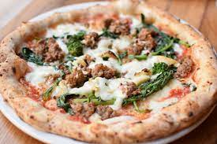

Pizza
Home

I have had this flavor of pizza several times when we visit Italy I have just never really made it at home.
The arugula does add a sharp taste to the pizza but it actually helps balance out the flavors from the crust to the garlic and finally the sausage!
INGREDIENTS
- 1 Pizza Dough
- 2 Teaspoons Garlic Powder
- 1/2 Teaspoons Dried Thyme
- 1/4 Cup Unsalted Tomato Sauce
- 1/2 Cup Mozzarella Cheese
- 4 oz Cooked Pork Sausage
- 1 Cup Fresh Arugula
- Olive Oil
INSTRUCTIONS
- Preheat oven to 415 degrees fahrenheit
- Roll out pizza dough on greased round 8 inch pan
- Top with tomato sauce
- Sprinkle with garlic powder and thyme
- Top with mozzarella cheese
- Top with sausage
- Bake for 12 minutes or until crust is puffy and crisp
- Top with arugula, drizzle with olive oil